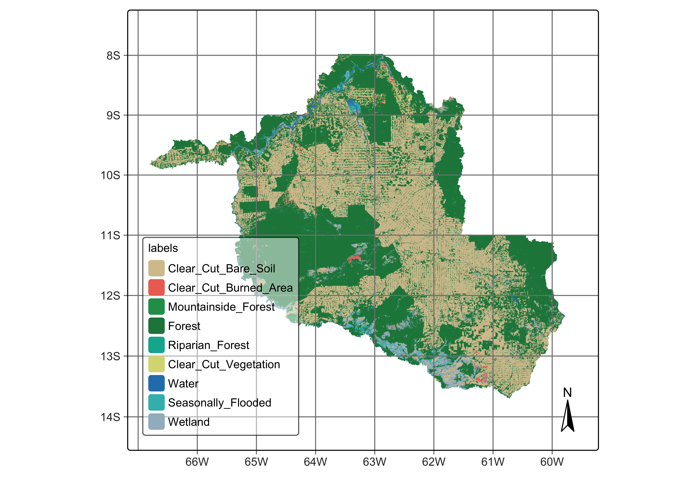

11 Map validation and use of maps for area estimation
Configurations to run this chapter
11.1 Introduction
Statistically robust and transparent approaches for assessing accuracy are essential parts of the land classification process. The sits package supports the good practice recommendations for designing and implementing an accuracy assessment of a change map and estimating the area based on reference sample data. These recommendations address three components: sampling design, reference data collection, and accuracy estimates [1].
Crucially, Olofsson et al. argue that area estimation should be based on the reference data, not solely on the classified map. This is because map-derived area estimates are often biased due to classification errors. By weighting the confusion matrix according to the sampling design, one can produce unbiased estimates of the area occupied by each land cover class, along with corresponding standard errors and confidence intervals. This correction is particularly important in studies where accurate area estimation informs policy or decision-making processes.
11.2 Example data set
Our study area is the state of Rondonia (RO) in the Brazilian Amazon, which has a total area of . According to official Brazilian government statistics, as of 2021, there are of tropical forests in RO, which corresponds to 53% of the state’s total area. Significant human occupation started in 1970, led by settlement projects promoted by then Brazil’s military government [2]. Small and large-scale cattle ranching occupies most deforested areas. Deforestation in Rondonia is highly fragmented, partly due to the original occupation by small settlers. Such fragmentation poses considerable challenges for automated methods to distinguish between clear-cut and highly degraded areas. While visual interpreters rely upon experience and field knowledge, researchers must carefully train automated methods to achieve the same distinction.
We used Sentinel-2 and Sentinel-2A ARD (analysis ready) images from 2022-01-01 to 2022-12-31. Using all 10 spectral bands, we produced a regular data cube with a 16-day interval, with 23 instances per year. The best pixels for each period were selected to obtain as low cloud cover as possible. Persistent cloud cover pixels remaining in each period are then temporally interpolated to obtain estimated values. As a result, each pixel is associated with a valid time series. To fully cover RO, we used 41 MGRS tiles; the final data cube has 1.1 TB.
The work considered nine LUCC classes: (a) stable natural land cover, including Forest and Water; (b) events associated with clear-cuts, including Clear_Cut_Vegetation, Clear_Cut_Bare_Soil, and Clear_Cut_Burned_Area; (c) natural areas with seasonal variability, Wetland, Seasonally_Flooded_Forest, and Riparian_Forest; (d) stable forest areas subject to topographic effects, including Mountainside_Forest.
In this chapter, we will take the classification map as our starting point for accuracy assessment. This map can be retrieved from the sitsdata package as follows.
Load probabilities cube
# define the classes of the probability cube
labels <- c("1" = "Clear_Cut_Bare_Soil",
"2" = "Clear_Cut_Burned_Area",
"3" = "Mountainside_Forest",
"4" = "Forest",
"5" = "Riparian_Forest",
"6" = "Clear_Cut_Vegetation",
"7" = "Water",
"8" = "Seasonally_Flooded",
"9" = "Wetland")
# directory where the data is stored
data_dir <- system.file("extdata/Rondonia-Class-2022-Mosaic/", package = "sitsdata")
# create a probability data cube from a file
rondonia_2022_class <- sits_cube(
source = "MPC",
collection = "SENTINEL-2-L2A",
data_dir = data_dir,
bands = "class",
labels = labels,
version = "mosaic"
)Plot cube
# plot the classification map
plot(rondonia_2022_class)
11.3 Sampling design
A key recommendation is the use of probability-based sampling designs—such as stratified random sampling—for the selection of reference data. This approach guarantees that each sample unit has a known, non-zero probability of selection, enabling the derivation of statistically valid and unbiased estimates. Moreover, stratified sampling is particularly effective in improving the precision of area estimates, especially when class distributions are imbalanced.
The reference data used for validation must be collected independently of the classification process and should be carefully labeled according to a set of clear, mutually exclusive, and exhaustive class definitions. These definitions must be consistently applied across both map labels and reference labels to avoid ambiguities during comparison.
Sampling designs use established statistical methods aimed at providing unbiased estimates. Based on a chosen design, sits supports a selection of random samples per class. These samples should be evaluated accurately using high-quality reference data, ideally collected through field visits or using high-resolution imagery. In this way, we get a reference classification that is more accurate than the map classification being evaluated.
Following the recommended best practices for estimating accuracy of LUCC maps [1], sits uses Cochran’s method for stratified random sampling [3]. The method divides the population into homogeneous subgroups, or strata, and then applying random sampling within each stratum. In the case of LUCC, we take the classification map as the basis for the stratification. The area occupied by each class is considered as an homogeneous subgroup. Cochran’s method for stratified random sampling helps to increase the precision of the estimates by reducing the overall variance, particularly when there is significant variability between strata but relatively less variability within each stratum.
To determine the overall number of samples to measure accuracy, we use the following formula [3]:
\[ n = \left( \frac{\sum_{i=1}^L W_i S_i}{S(\hat{O})} \right)^2 \] where
- \(L\) is the number of classes
- \(S(\hat{O})\) is the expected standard error of the accuracy estimate, expressed as a proportion
- \(S_i\) is the standard deviation of stratum \(i\)
- \(W_i\) is is the mapped proportion of area of class \(i\)
The standard deviation per class (stratum) is estimated based on the expected user’s accuracy \(U_i\) for each class as
\[ S_i = \sqrt{U_i(1 - U_i)} \]
Therefore, the total number of samples depends on the assumptions about the user’s accuracies \(U_i\) and the expected standard error \(S(\hat{O})\). Once the sample size is estimated, there are several methods for allocating samples per class [1]. One option is proportional allocation, when sample size in each stratum is proportional to the stratum’s size in the population. In land use mapping, some classes often have small areas compared to the more frequent ones. Using proportional allocation, rare classes will have small sample sizes decreasing their accuracy. Another option is equal allocation, where all classes will have the same number of samples; however, equal allocation may fail to capture the natural variation of classes with large areas.
As alternatives to proportional and equal allocation, [1] suggests ad-hoc approaches where each class is assigned a minimum number of samples. He proposes three allocations where 50, 75 and 100 sample units are allocated to the less common classes, and proportional allocation is used for more frequent ones. These allocation methods should be considered as suggestions, and users should be flexible to select alternative sampling designs.
The allocation methods proposed by [1] are supported by function sits_sampling_design(), which has the following parameters:
-
cube: a classified data cube; -
expected_ua: a named vector with the expected user’s accuracies for each class; -
alloc_options: fixed sample allocation for rare classes; -
std_err: expected standard error of the accuracy estimate; -
rare_class_prop: proportional area limit to determine which are the rare classes.
In the case of Rondonia, the following sampling design was adopted.
ro_sampling_design <- sits_sampling_design(
cube = rondonia_2022_class,
expected_ua = c(
"Clear_Cut_Bare_Soil" = 0.75,
"Clear_Cut_Burned_Area" = 0.70,
"Mountainside_Forest" = 0.70,
"Forest" = 0.75,
"Riparian_Forest" = 0.70,
"Clear_Cut_Vegetation" = 0.70,
"Water" = 0.70,
"Seasonally_Flooded" = 0.70,
"Wetland" = 0.70
),
alloc_options = c(120, 100),
std_err = 0.01,
rare_class_prop = 0.1
)
# show sampling design
ro_sampling_design prop expected_ua std_dev equal alloc_120 alloc_100
Clear_Cut_Bare_Soil 0.3841309 0.75 0.433 210 438 496
Clear_Cut_Burned_Area 0.004994874 0.7 0.458 210 120 100
Mountainside_Forest 0.004555433 0.7 0.458 210 120 100
Forest 0.538726 0.75 0.433 210 614 696
Riparian_Forest 0.005482552 0.7 0.458 210 120 100
Clear_Cut_Vegetation 0.009201698 0.7 0.458 210 120 100
Water 0.007682599 0.7 0.458 210 120 100
Seasonally_Flooded 0.007677294 0.7 0.458 210 120 100
Wetland 0.03754864 0.7 0.458 210 120 100
alloc_prop
Clear_Cut_Bare_Soil 727
Clear_Cut_Burned_Area 9
Mountainside_Forest 9
Forest 1019
Riparian_Forest 10
Clear_Cut_Vegetation 17
Water 15
Seasonally_Flooded 15
Wetland 71 11.4 Stratified random sampling
The next step is to chose one of the options for sampling design to generate a set of points for stratified sampling. These points can then be used for accuracy assessment. This is achieved by function sits_stratified_sampling() which takes the following parameters:
-
cube: a classified data cube; -
sampling_design: the output of functionsits_sampling_design(); -
alloc: one of the sampling allocation options produced bysits_sampling_design(); -
overhead: additional proportion of number of samples per class (see below); -
multicores: number of cores to run the function in parallel; -
shp_file: name of shapefile to save results for later use (optional); -
progress: show progress bar?
In the example below, we chose the “alloc_120” option from the sampling design to generate a set of stratified samples. The output of the function is an sf object with points with location (latitude and longitude) and class assigned in the map. We can also generate a SHP file with the sample information. The script below shows how to use sits_stratified_sampling() and also how to convert an sf object to a SHP file.
Generate stratified samples
ro_samples_sf <- sits_stratified_sampling(
cube = rondonia_2022_class,
sampling_design = ro_sampling_design,
alloc = "alloc_120",
multicores = 4
)Save samples in a shapefile
Using the SHP file, users can visualize the points in a standard GIS such as QGIS. For each point, they will indicate what is the correct class. In this way, they will obtain a confusion matrix which will be used for accuracy assessment. The overhead parameter is useful for users to discard border or doubtful pixels where the interpreter cannot be confident of her class assignment. By discarding points whose attribution is uncertain, they will improve the quality of the assessment.
After all sampling points are labelled in QGIS (or similar), users should produce a CSV file, a SHP file, a data frame, or an sf object, with at least three columns: latitude, longitude and label. See the next section for an example on how to use this data set for accuracay assessment.
11.5 Accuracy assessment of classified images
To measure the accuracy of classified images, sits_accuracy() uses an area-weighted technique, following the best practices proposed by Olofsson et al. [4]. The need for area-weighted estimates arises because the land classes are not evenly distributed in space. In some applications (e.g., deforestation) where the interest lies in assessing how much of the image has changed, the area mapped as deforested is likely to be a small fraction of the total area. If users disregard the relative importance of small areas where change is taking place, the overall accuracy estimate will be inflated and unrealistic. For this reason, Olofsson et al. argue that “mapped areas should be adjusted to eliminate bias attributable to map classification error, and these error-adjusted area estimates should be accompanied by confidence intervals to quantify the sampling variability of the estimated area” [4].
With this motivation, when measuring the accuracy of classified images, sits_accuracy() follows the procedure set by Olofsson et al. [4]. Given a classified image and a validation file, the first step calculates the confusion matrix in the traditional way, i.e., by identifying the commission and omission errors. Then it calculates the unbiased estimator of the proportion of area in cell \(i,j\) of the error matrix
\[ \hat{p_{i,j}} = W_i\frac{n_{i,j}}{n_i}, \]
where the total area of the map is \(A_{tot}\), the mapping area of class \(i\) is \(A_{m,i}\) and the proportion of area mapped as class \(i\) is \(W_i = {A_{m,i}}/{A_{tot}}\).
Adjusting for area size allows producing an unbiased estimation of the total area of class \(j\), defined as a stratified estimator \[ \hat{A_j} = A_{tot}\sum_{i=1}^KW_i\frac{n_{i,j}}{n_i}. \]
This unbiased area estimator includes the effect of false negatives (omission error) while not considering the effect of false positives (commission error). The area estimates also allow for an unbiased estimate of the user’s and producer’s accuracy for each class. Following Olofsson et al. [4], we provide the 95% confidence interval for \(\hat{A_j}\).
To produce the adjusted area estimates for classified maps, sits_accuracy() uses the following parameters:
-
data: a classified data cube; -
validation: a CSV file, SHP file, GPKG file,sfobject or data frame containing at least three columns:latitude,longitudeandlabel, containing a set of well-selected labeled points obtained from the samples suggested bysits_stratified_sample().
In the example below, we use a validation set produced by the researchers which produced the Rondonia data set, described above. The validation team used QGIS to produce a CSV file with validation data, which is then used to assess the area accuracy using the best practices recommended by [1].
Since the aim of the classification was to create a forest/non-forest map, the map land cover classes were grouped into natural and anthropic ones. All Clear_Cut classes were joined, as was done with all Forest classes. The rationale for this decision was that the final map was not intended to be a detailed description of different types of forest and clear-cut areas, but rather an assessment of how much deforestation had occurred in the period.
rondonia_2022_reclass <- sits_reclassify(
cube = rondonia_2022_class,
mask = rondonia_2022_class,
rules = list(
"Forest" = mask %in% c(
"Mountainside_Forest",
"Forest",
"Riparian_Forest",
"Seasonally_Flooded"
),
"Clear_Cut" = mask %in% c(
"Clear_Cut_Bare_Soil",
"Clear_Cut_Burned_Area",
"Clear_Cut_Vegetation"
)
),
output_dir = tempdir_r,
memsize = 16,
multicores = 4
)# Get ground truth points
valid_csv <- system.file(
"extdata/Rondonia-Class-2022-Mosaic/rondonia_samples_reclass.csv", package = "sitsdata"
)
# Calculate accuracy according to Olofsson's method
area_acc_val_map <- sits_accuracy(rondonia_2022_reclass,
validation = valid_csv,
multicores = 4)
# Print the area estimated accuracy
area_acc_val_mapArea Weighted Statistics
Overall Accuracy = 0.94
Area-Weighted Users and Producers Accuracy
User Producer
Forest 0.92 0.99
Water 0.97 0.69
Wetland 0.87 0.61
Clear_Cut 0.96 0.92
Mapped Area x Estimated Area (ha)
Mapped Area (ha) Error-Adjusted Area (ha) Conf Interval (ha)
Forest 13815924.5 12812931.8 226484.25
Water 190751.9 266197.7 65812.24
Wetland 932298.3 1337988.6 175126.40
Clear_Cut 9890105.6 10411962.2 238517.20The confusion matrix is also available, as follows.
area_acc_val_map$error_matrix
Forest Water Wetland Clear_Cut
Forest 1048 3 21 67
Water 4 121 0 0
Wetland 7 0 88 6
Clear_Cut 2 3 18 634The results show a clear distinction between forest areas and those associated with deforestation (Clear_Cut). It also shows a possible source of confusion between wetlands and clear cuts, which point at improvements in traning samples for those classes to improve performance.
11.6 Summary
This chapter provides an example of the recommended statistical methods for designing stratified samples for accuracy assessment. However, these sampling methods depend on perfect or near-perfect validation by end-users. Ensuring best practices in accuracy assessment involves a well-designed sample set and a sample interpretation that aligns with the classifier’s training set.